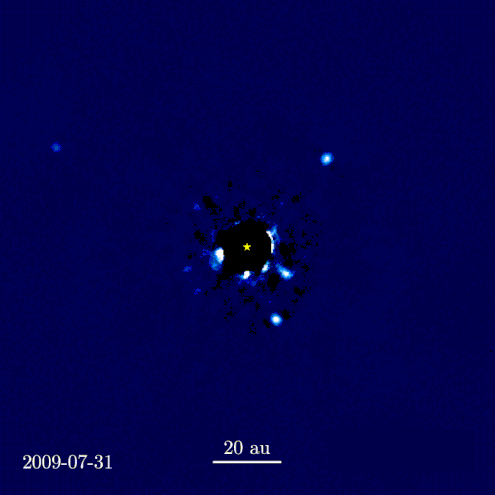

Stellar Quest: Discovering the Exoplanetary Universe
Introduction
Navigating the Spectrum
Exploring Exoplanets
Comparative Exploration
Introduction to Exoplanets
Welcome to "Stellar Quest", a narrative exploration into the captivating world of exoplanets. For
centuries, humans have
looked up at the night sky, wondering about the myriad worlds that might exist beyond our solar system.
With the advent
of modern telescopes and space missions, we've embarked on an incredible journey of discovery, finding
thousands of
exoplanets—planets that orbit stars outside of our solar system. These distant worlds come in a wide
range of
compositions and characteristics, from rocky planets like Earth to gas giants like Jupiter. While direct
imaging is
rare, astronomers employ various indirect methods, such as measuring the dimming of stars during
planetary transits or
observing subtle Doppler shifts in starlight, allowing us to discover and analyze these incredible
exoplanets. One
notable example is the TRAPPIST-1 system, where seven Earth-sized planets have been identified and
studied based on
their influence on each other's orbits and the properties of their host star. Through these discoveries,
we gain
invaluable insights not only into these intriguing alien worlds but also into our own home planet and
its place in the
vast cosmic arena. In this interactive visual journey, we invite you to explore the fascinating
diversity and patterns
found in the exoplanets we've discovered so far.

12 years of W.M. Keck Observatory imagery of star system HR 8799 have been time-lapsed. The system hosts four planets that are more massive than Jupiter.
Navigating the Cosmic Spectrum: From Earth to Gas Giants
Embark on an enlightening voyage through the vast expanse of known exoplanets. In this interactive
scatter plot, each
dot represents an exoplanet, with its position determined by its mass and radius. Starting from our home
planet, Earth,
we journey through the different categories of exoplanets: Terrestrial, Super-Earth, Neptunian, and the
Gas
Giants. Observe the patterns and distributions, and hover over each point to view details about
individual planets.
Exploring Exoplanets: Mass, Radius, and Host Star Spectral Types
Dive into the vast expanse of our universe as we visualize the relationship between the mass and radius
of known
exoplanets. This interactive scatter plot groups exoplanets based on the spectral type of their host
star, shedding
light on the diverse range of celestial bodies that lie beyond our solar system. From red dwarfs to the
hot
O-type stars, observe the intriguing patterns that emerge as you explore. And as a touchstone, Earth –
with its G-type
host star, the Sun – is also plotted for context. Use the on-screen navigation to focus on different
star types and
unearth details about each category. As you hover over each data point, uncover the name, mass, and
radius
of the planet, as well as the spectral type of its host star.
Comparative Exploration of Exoplanets
In our quest to understand the universe, exoplanets — planets outside our solar system — have always
intrigued us. This
visualization delves deep into the characteristics of known exoplanets, focusing on their mass and
radius, especially
those comparable to Earth. The exoplanets have been filtered to represent only those that orbit stars of
spectral type
G, K, and M, akin to our Sun and other cooler dwarf stars. A highlighted region represents exoplanets
with a mass
ranging from 0.8 to 2 times that of Earth, often considered pivotal in the search for life-sustaining
conditions. These
planets may possess a solid surface and an atmosphere conducive to life as we know it. By navigating
through the plotted
data points, one can gain insights into the equilibrium temperature, density, and distance from Earth
for each
exoplanet.